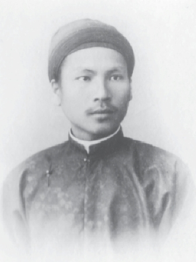
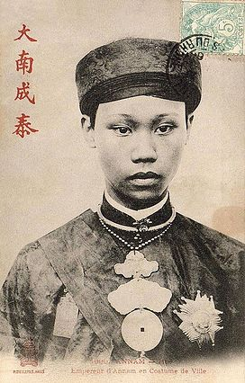
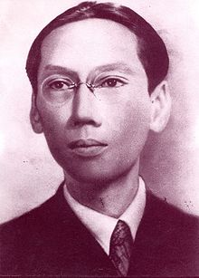

Phong trào Cần Vương cứu quốc
- Phong trào Văn Thân, kháng Pháp
- Chế độ bảo hộ của Pháp ở Việt Nam
1 – Phong trào Cần Vương cứu quốc
Bắc Kỳ như trên đã nói, có thể coi là bị lót hết vào bàn tay của quân đội viễn chinh Pháp.
Tại Huế cuộc khủng hoảng chính trị mỗi giờ phút một nặng nề. Ai cũng thấy rõ thế nước chông chênh, mất còn chỉ là thời gian. Trong các quan chia làm hai phe: phe chủ chiến có hai ông Tôn Thất Thuyết và Nguyễn Văn Tường, phe chủ hòa có Tràn Tiển Thành, Nguyễn Hữu Độ, Gia Hưng quân vương…Với danh nghĩa Phu chính đại thần, hai ông Thuyết, Tường, nắm hết quyền hành và ra mặt độc đoán. Hai ông triệt hạ hết các nhân vật của phe chủ hòa và hu động việc kháng chiến từ Trung ra Bắc. Do đó ta đa xthaays Khâm sai Hoàng Kế Viêm trở ra hoạt động tại Sơn Tây, Trương Quang Đản ở Bắc Ninh, Tạ Hiện ở Nam ĐỊnh, Phạm Vũ Mẫn, Hoàng Văn Hòe, Nguyễn Thiện Thuật ở các tỉnh khác. Các ông này đều là các quan văn võ cao cấp của triều đình, nhiệt liệt hưởng ứng lời hịch Cần Vương. Bị Pháp phản đối nhiều lần lại thêm thất trận nặng nền nên có phen họ Hoàng và Trương phải về kinh, nhưng vẫn không phải là triều đình đã thay đổi chính sách vì lúc này ông Tường vẫn ngoại giao khéo léo với pháp để ông Thuyết ngầm tổ chức kháng chiến. Ở Trung, đoàn quân Phấn Nghĩa có hàng vạn người được bí mật sửa soạn chờ ngày tổng phản công. Một trường diễn võ được lập ra để huấn luyện quân đội. Tại Sơn Phòng, phe kháng chiến xây dựng một chiến khu với mục đích bên trong tiếp ứng cho Quảng Bình, Quảng Trị, phía ngoài liên lạc với các miền thượng du Thanh Nghệ và có đường rút sang Lào và Xiêm. Quân đội đóng ở đây có hơn một ngàn với hơn 20 cỗ đại bác. Chiến khu này xét ra là con đường lùi của kháng chiến một khi cuộc đánh úp đồn Mang Cá bị thất bại.
Vua Kiến Phúc ở ngôi được hơn 6 tháng và mất ngày mồng 7 tháng 4 năm Giáp Thân (1884) trong một trường hợp vô cùng thê thảm như trên đã kể. Em Ngài là vua Hàm Nghi lên thay, tức là Chánh Mông, húy là Ưng Lịch khi đó mới 12 tuổi. Để đánh dấu những biến cố trên đây, sĩ phu Việt nam đã có hai câu thơ:
Nhất giang lưỡng quốc nan phân thuyết
Tứ nguyệt tam vương triều bất tường[1]
Khâm sứ Rheinart trách cứ rằng việc đặt vua Hàm Nghi lên ngôi không có xin phép nước Pháp và đại tá Guerrier đem 600 quân cùng một đội pháp binh từ Bắc vào Huế để thị uy. Sau đó Rheinart và Guerrier sang làm lễ phong vương cho vua Hàm Nghi rồi mới rút binh sĩ về Hà Nội.
Xét tình hình có thể rối loạn to về phía phong kiến Việt Nam, sau khi hòa ước Thiên Tân ký vào ngày 27-4-1885 tức là năm Quang Tự thứ 11 (Ất Dậu) giữa Patenôtre đại diện Pháp và Lý Hồng Chương đại diện Thanh triều, Pháp liền dốc toàn lực để tiêu diệt cuộc kháng chiến của Cần Vương mà thái độ giờ phút đó rất khả nghi và quan ngại. Ngày 18 tháng 4 năm Ất Dậu (1885), thống tướng De Courcy vừa sang tới Bắc Kỳ liền đem ngót một ngàn quân vào Huế bàn việc giao thiệp giữa ông với Nam triều, đòi các quan phụ chính đại thần phải sang tận sứ quán Pháp để hội thương. Viên tướng Pháp còn bắt Nam triều ra lệnh cho sĩ phu và dân chúng tòng phục hoàn toàn chính thể bảo hộ. Y lại có ý nhân dịp này bắt ông Tôn Thất Thuyết ngay giữa cuộc đàm phán vì ông này là linh hồn của kháng chiến. Thuyết biết mưu này liền cáo ốm không sang và để Nguyễn Văn Tường cùng Phạm Thận Duật sang tòa Khâm (theo tin các báo Ba Lê hồi ấy)
Trong cuộc đàm thoại, De Courcy yêu sách nhiều điều làm nhục quốc thể Việt Nam, đại khái y đòi khi y đến, vua Hàm Nghi phải bước xuống ngai nghênh tiếp, sau lại bó buộc ông Thuyết nếu ốm thì nằm cáng mà sang sứ quán Pháp.
Thật là đưa nhau vào bước đường quyết liệt, vì vậy mà cuộc chiến tranh Việt Pháp không sao tránh được.
Thuyết không chịu, De Courcy tính sao? Có kẻ Việt gian báo cho Khâm sứ De Courcy biết rằng Thuyết không ốm, ông vẫn đi kiểm soát đồn trại và kho thuốc súng. Một ngày qua tức là ngày 22-5 năm Ất Dậu (5-7-1885), Pháp khao thưởng quân đội định sáng hôm sau sang vây bộ binh bắt Thuyết, thì vào một giờ đêm Thuyết và Soạn cho bắn một phát đại bác làm hiệu lệnh để nhất tè tấn công vào đồn Mang Cá và sứ quán Pháp.
Quân Pháp xuất kỳ bất ý, vội vàng nghênh địch, nhưng vẫn giữ thế thủ để chờ buổi sáng. Họ ẩn núp trong trại không chịu ra ngoài. Khi mặt trời hé mọc, quân Pháp thủy lục đều phản công, họ chở súng lên đài và nóc tàu bắn qua rầm rầm giết hại quân nhân rất nhiều, Hoàng thành và cung điện nhiều nơi bị phá hủy. Họ chia ra làm nhiều đạo quân tiến đánh các mặt. Hai đạo quân của ta ở bên trong và bên ngoài chống không nổi, bị vỡ.
Nguyễn Văn Tường thấy thế nguy liền vào Nội yêu cầu nhà vua xuất cung. Hữu quân Hồ Văn Hiển phò giá, đầu giờ Thìn ra cửa Tây Nam. Từ Dũ thái hậu ủy Tường ở lại lo việc giảng hòa, Thuyết chạy kịp theo, còn chừng trăm người. Quân Pháp liền trèo lên kỳ đài treo cờ Tam Tài.
Kiểm điểm lại trận đánh tại Kinh thành đêm 22 tháng 5 năm Ất Dậu (1885), ta thấy phần bại hoàn toàn về phía chúng ta. Pháp chỉ chết có 16 người, bị thương 80 người. Quân ta chết đến vài ngàn, còn khí giới, lương thực mất đến hàng triệu bạc. Sáng ngày 23 quân ta rút lui khỏi Huế, xa giá nghỉ ở Trường Thi một lát rồi lên đường đi Quảng Trị. Nguyễn Văn Tường được lệnh ở lại thu xếp mọi việc[2]. (Tài liệu của giáo sĩ Delvaux viết trong bài La prise de Huế của tạp chí Bulletin des Amis du Vieux Huế)
Trưa hôm ấy, ông nhờ giám mục Caspard đưa ra đầu thú với thống tướng De Courcy, Tường được đến trú tại Thương bạc viện và bị đại úy Schmitz coi giữ. Pháp buộc ông ta nội hai tháng phải thu xếp cho yên mọi việc. Ông Tường gửi sớ ra Quảng Trị xin rước Tam cung (bà Từ Dũ Thái hoàng thái hậu, mẹ đức Dực Tông, bà Hoàng thái hậu là vợ đức Dực Tông và là mẹ nuôi ông Dục Đức, Kiến Phúc và Đồng Khánh.
Một tướng Pháp tham gia trận đánh đồn Mang Cá khen quân ta thiện nghệ phòng thủ vì các đường giao thông có đào hầm hố hoặc chẹn bằng các chướng ngại vật. Binh sĩ nấp đằng sau những tấm phên nứa căng hai lần da trâu mà bắn đến giờ chót mới chịu rút lui.
Trong khi đó, Thuyết đem vua Hàm Nghi chạy ra Tân Sở (Quảng Trị) người Pháp treo giải 2000 lạng bạc cái đầu của ông Thuyết và ai bắt được vua Hàm Nghi thì được thương 500 lạng.
Từ Dũ thái hậu viết thư mấy lần khuyên cháu trở về nhưng vô hiệu. Từ Trung ra Bắc, cờ khởi nghĩa bay khắp nơi.
Sau biến cố này, mọi việc trong triều do khâm sứ Pháp điều khiển hết và các quan ta, mỗi khi có việc gì đều nhất nhất phải hỏi ý tòa Khâm. De Courcy cho gọi Silvestre ở Bắc vào Huế để tổ chức một chính phủ lâm thời. Hoàng thân Thọ Xuân được cử ra quyền nhiếp chính phủ này và Nguyễn Văn Tường điều khiển Cơ mật viện. Lúc này người Pháp thấy khó có hy vọng dụ được vua Hàm Nghi trở về, liền đặt ông Chánh Mông là Kiên Giang quận công theo lời đề nghị của Từ Dũ thái hậu (vua Đồng Khánh là anh vua Kiến Phúc và Hàm Nghi[3]). Ngày 6 tháng 8 ông phải thân hành sang tòa khâm để chịu lễ thụ phong. Vị hoàng đế này tính tình hiền lành, ưa trang sức và cũng thích duy tân, rất được lòng người Pháp. Đình thần bấy giờ có Nguyễn Hữu Độ, Phan Đình Bình đang ở Bắc được Pháp gọi về giúp vua mới cùng với Nguyễn Văn Tường. Ít ngày sau, Nguyễn Hữu Độ không hợp ý với Nguyễn Văn Tường nên lại trở ra Hà Nội.
Giữa hôm vua Đồng Khánh bước lên ngai vàng thì Tôn Thất Thuyết tung ra bài hịch Cần Vương.
Bài hịch này hẳn là của Tôn Thất Thuyết lấy lời của vua Hàm Nghi kể nông nổi của nước Việt Nam từ ngày người Pháp bước chân lên đất Nam Kỳ cho đến khi họ tràn lan ra Trung, Bắc, bày mưu lập kế dùng bạo lực đặt nền thống trị lên toàn cõi Việt Nam. Họ chiếm nước là đã làm một chuyện khiến quân dân Việt Nam đau đớn lại còn sỉ nhục triều đình cùng sĩ phu đất Việt nữa. Nhà vua thống trách Nguyễn văn Tường chạy theo kẻ địch, lại tập tâm tìm bắt nhà vua để nộp cho Pháp.
Ngài kể lại nỗi khổ sở từ khi rời bỏ kinh thành, lặn suối trèo non và Ngài hiệu triệu thần dân trong nước, muôn người như một hãy đồng tâm gắng sức giải phóng quốc gia, nêu cao tinh thần kháng chiến.
Lời lẽ tờ hịch hết sức lâm ly thấm thiết, nên có nhiều nhân sĩ hồi ấy đọc đến phải nghẹn ngào sa lệ, vỗ gươm đứng dậy. Kết quả là những cuộc khởi nghĩa đã nổi lên ầm ầm như phong ba bão táp.
Lê Trung Đỉnh ở Quảng Nghĩa
Mai Xuân Thưởng ở Bình Định
Nguyễn Huệ ở Quảng Nam
Đề đốc Lê Trực ở sông Gianh (Quảng Bình)
Phan Đình Phùng ở Nghệ Tỉnh
Tống Duy Tân, Cầm Bá Thước ở Thanh Hóa
Đinh Công Tráng ở Ba Đình
Nguyễn Thuật đứng đầu quân Cần Vương xứ Bắc
Hoàng Hoa Thám hoạt động vùng Yên Thế
Sau đó, Thuyết sang tàu với mục đích cầu viện vì ông vẫn tin tưởng ở sức mạnh của nhà Thanh. Ông cho rằng người khác đi thay không bày tỏ hết tình trạng nước nhà, e lỡ việc lớn, nay lấy danh nghĩa mình là người trong hoàng tộc, lại là phụ chính đại thần và đại tướng thì sự giao thiệp có lợi hơn.
Ông bắt đầu đi từ Hương Khê theo đường rừng ra Nghệ An, qua Thanh Hóa, Lai Châu, lên Lào Cai tới Vân Nam rồi sang Quảng Đông. Cùng đi với ông có đề đốc Trần Xuân Soạn, Võ cử nhân Nguyễn Viết Tốn, đi đến đâu, cổ động kháng chiến đến đấy chớ không đi thẳng một mạch nên hành trình từ Hà Tĩnh sang Quảng Đông kéo dài một năm.
Khi đến Trung Quốc, Tôn Thất Thuyết ở lại nhà Liêu Văn Chỉ ít bữa rồi sang Vân Nam. Ông gặp Sầm Xuân Huyên là tổng đốc tỉnh này, sau Huyện lại giới thiệuông với tổng đốc Quảng Tây là Trương Minh Ký. Do họ Trương, ông lại làm quen với thống đốc Quảng Đông là Lý Hàn Chương (anh Lý Hồng Chương). Tại Quảng Đông, ông Thuyết làm một lá sớ đệ lên Bắc Kinh. Khi đó Pháp cho người lên Bắc Kinh vận động với Lý Hồng Chương, bấy giờ làm toàn quyền Đại thần triều Mãn, họ Lý tâu với Tây thái hậu, chiếu theo lời đề nghị của Pháp, giữ ông Thuyết ở huyện La Định, sau đem về huyện Thiêu Quan. Xét ra Tàu hồi đó bị Liệt cường bắt nạt, sau cuộc nha phiến chiến tranh với người Anh, phải cắt đất xin hòa, vì vậy tàu rất e dè người da trắng.
Ốc còn chẳng mang nổi mình ốc, đó là trường hợp Trung Quốc thuở ấy. Rồi việc cầu viện của ông Thuyết rốt cuộc chỉ là công dã tràng.
Năm 1912, Ông Thuyết tạ thế tại Thiêu Quan, được ông Lý Can Nguyên, bấy giờ chấp chính Bắc Kinh, xót thương người tiết liệt cho xây một ngôi mộ rất to và lập bia đề là “Nguyễn Phúc Thuyết Ngự tiền Thân sương chi mộ”
Nhân sĩ Quảng Đông có câu đối viếng ông như sau:
Thù nhung bất cộng đái thiên, vạn cổ phương danh lưu Tượng quận
Hộ giá biệt tầm tỉnh địa, thiên niên tàn cốt ký Long châu[4]
Về phía người Pháp, sau khi bọn ông Thuyết rời bỏ kinh thành, đại tá Chaumont được lệnh đem quân ra đóng ở Quảng Bình để chận đón phe kháng chiến, không cho giao thiệp với Bắc Kỳ. Nhưng ở Nghệ An và Thanh Hóa, nghĩa quân hoạt động rất mạnh, thiếu ta Grégoire ở lại giữ Quảng Bình, còn đại tá Chaumont trở về Đà Nẵng lấy thêm viện binh đưa tàu chiến ra đóng ở Nghệ An và tuần tiểu khắp nơi.
Tháng 9 năm Bính Tuất (1886) Hoàng Kế Viêm được vua Đồng Khánh phong làm An phủ kinh lược đại sứ ra Quảng Bình chiêu vụ vua Hàm Nghi và các Văn Thân, yêu cầu các vị trở về và sẽ được hưởng địa vị như cũ. Việc chiêu dụ này có thể nói là thất bại vì các lãnh tụ Cần Vương không ai theo, trừ một số thủ hộ không đáng kể. Ông Hoàng Kế Viêm bị rút công tác vào tháng 5 năm Đinh Hợi (1887) vì lẽ đó.
Bấy giờ quân Cần Vương chiến đấu rãi rác khắp nơi. Đề đốc Lê Trực đóng ở Thanh Thủy, thuộc huyện Tuyên Chánh, Tôn Thất Đạm (con ông Thuyết) đóng ở thượng du Hà Tĩnh, thuộc hai hạt Kỳ Anh và Cẩm Xuyên, Tôn Thất Thiệp (con ông Thuyết) và Phạm Tuân theo vua Hàm Nghi loanh quanh ở huyện Thanh Hóa.
Suốt Trung Nam Bắc, lúc đó tình hình rối ren, người Pháp phải chia nhau đi đánh dẹp khắp nơi vì mọi cuộc phủ dụ đều thất bại.
Đại úy Mouteaux ở Quảng Bình cùng với cố Tortuyaux đem quân đi đánh Lê Trực ở Thanh Thủy. Biết ông Trực là người nghĩa khí, Mouteaux viết thư lấy lời trang trọng mời ông trở về nhưng bị ông khước từ như sau:
“Tôi vì vua, vì nước, đã quyết lòng làm hết bổn phận, đâu dám than sự sống mà quên việc nghĩa”
Trong giai đoạn này, người Pháp đóng quân ở đồn Minh Cầm, bọn ông Trực phải lui về phía trên, sau đó Lê Trực ra mạn Hà Tĩnh, Nguyễn Phạm Tuân đóng ở Yên Lộc, thuộc miền Nam sông Gianh. Qua tháng ba, thám tử chỉ cho Mouteaux nơi ông Nguyễn Phạm Tuân đồn trú. Ông bị vây bắt được cả bọn, vì bị đạn bên cạnh sườn, mấy ngày sau thì mất.
Điều người Pháp cần nhất là tìm bắt vua Hàm Nghi, biết rằng nhà vua là linh hồn của Cần Vương lại được dân chúng mến yêu nên vì thế mà cuộc khởi nghĩa Cần Vương được hậu thuẫn rất mạnh. Nhưng khi ấy chưa rõ được tông tích của Ngài thì ít tháng sau có kẻ mách rằng muốn bắt được vua Hàm Nghi phải có tên Trương Quang Ngọc, ở làng Trà Mạc, lúc đó đnag được ra vào hầu cận vua, Ngọc là kẻ tiểu nhân có thể mua chuộc được. Đại úy Mouteaux liền dùng tiền bạc, danh lợi dỗ dành được bọn tổng lý hạt Minh Cầm liên lạc với Trương Quang Ngọc. Ngọc nhận lời giúp quân Pháp nhưng chưa dám hẹn có thể bắt được nhà vua ngay.

Vua Hàm Nghi
Khi ấy, bên cạnh nhà vua Hàm Nghi có Tôn Thất Thiệp là một thiếu niên anh dũng, không bao giờ rời vua nửa bước. Kẻ nào bàn đến chuyện về đầu thứ đều bị Thiệp giết ngay, vì vậy mà bọn Ngọc còn e dè. Còn nhóm ông Lê Trực và Tôn Thất Đamh cùng nghĩa quân lưu động, nay chỗ này, mai chỗ khác, người Pháp mệt sức mà cũng không tiêu diệt nổi, vì thế mà đại úy Mouteaux xin về Pháp nghỉ. Thay ông trong việc này là một viên đại tá chỉ huy ở Huế, ông ra Quảng Bình tiếp tục công việc kể trên nhưng tình thế của đôi bên cũng không ra khỏi chỗ bế tắc. Người Pháp vẫn không diệt nổi Văn Thân, nhưng Văn Thân cũng chỉ làm được việc quấy rối lung tung khắp nơi mà thôi. Cho đến tháng 9, quân Pháp mỏi mệt đã định rút về miền đã định rút về miền bể thì có một kẻ hầu cận vua Hàm Nghi ra thú ở Đồng Cả, phía trên đồn Minh Cầm. Tên này khai rõ tung tích vua Hàm Nghi và nhân viên quanh Ngài. Người Pháp lại dùng hắn để liên lạc với Trương Quang Ngọc và tên Nguyễn Định Tình, bọn này bấy giờ mới tình nguyện mấy hôm sau sẽ bắt sống được vua Hàm Nghi. Chúng được chỉ thị ngoài nhà vua ra, còn ai chống cự thì cứ giết.
Ngày 26 tháng 9 năm Mậu Tý là ngày tuyệt vọng của ông vua bôn đào, một ngày tan vỡ mộng khôi phục đất nước và là ngày tàn lụi của cuộc Cách mạng phong kiến Việt Nam.
Bấy giờ vào hồi nửa đêm, Ngọc và Tình đem 20 thủ hạ, người làng Thanh Lang và Thanh Cuộc, đến vây làng Tả Bảo là chõ trú ẩn của nhà vua, Tôn Thất Thiệp đang ngủ, nghe có biến vùng vậy vừa cầm gương nhảy ra thì bị chúng đâm chết ngay.
Vua Hàm Nghi nhận thấy Ngọc, giận uất vô cùng, trao cho nó thanh kiếm mà bảo rằng:
- Mày giết tao đi còn hơn đem tao nộp cho Tây.
Một kẻ lanh tay ôm lấy lưng Ngài và kẻ khác giật lấy thanh kiếm. Từ lúc bị bắt cho đến khi tới trại Pháp, Ngài đau đớn không nói năng được nửa lời. Sáng hôm sau bọn tên Ngọc võng Ngài ra bến Ngã Hai, xuống bè đi hai ngày đến đồn Thanh Lang nộp cho đại úy Boulangier. Ngay lúc đó, Boulangier đưa Ngài về đồn Thuận Bài, gần chợ Đồn bên tả ngạn sông Gianh. Rồi Ngài bị đưa xuống tàu về Thuận An và sau đó bị đày đi Algerie, mỗi năm được cấp 25.000 phật lăng. Bấy giờ Ngài mới 16 tuổi.
Trương Quang Ngọc được hàm Lãnh binh, Nguyễn Định Tình được thưởng hàm võ quan.
Việc vua Hàm Nghi bị bắt quả đã đem lại ảnh hưởng tai hại cho phong trào Cần Vương như chúng ta đã nói ở trên và làm nản lòng một phần chiến sĩ trong hàng ngũ cứu quốc. Ngoài ra, địa vị của người Pháp mỗi người một vững vàng và mạnh mẽ, trái lại sức đấu tranh của Văn Thân mỗi ngày một bị tê liệt thêm, rồi tan ra dần đi.
Nghe tin vua Hàm Nghi bị bắt, Tôn Thất Đạm liền hội các tướng sĩ đến hiểu dụ rằng tình thế rõ rệt sớm muộn sẽ thất bại, nếu kéo dài cuộc kháng chiến càng thêm hại. Ông khuyên mọi người nên ra thú để về an cư lạc nghiệp. Rồi ông có gửi về Huế hai bức thư: một cho vua Hàm Nghi là cả một thiên trường hận, lâm ly, thấm thiết của một người tôi trung, một thiếu niên anh hùng chỉ biết sống chết cùng đất nước, một lá thư gửi cho thiếu tá Debat ở đồn Thuận Bài yêu cầu sự an toàn cho các đồng chí.
Viết thư xong ông nói:
- Quân Pháp có muốn bắt ta thì vào mà tìm mả ta ở trong rừng.
Ngay lúc ấy, ông thắt cổ mà chết.
Hai bức thư này được đại úy Gosselin phiên dịch sang tiếng Pháp và in trong cuốn “Empire d’Annam” của ông, lời lẽ rất cương quyết và khẳng khái.
2 – Phong Trào Văn Thân Chống Pháp
Năm Ất Dậu (1885) sau khi thất bại trong việc đánh thành Mang Cá và sứ quán Pháp, vua Hàm Nghi cùng các người kháng chiến rút khỏi Kinh. Ông Tôn Thất Thuyết mượn lời vua Hàm Nghi tung ra lời hịch kêu gọi toàn dân kháng chiến, sau ông qua Tàu cầu viện. Ông đi và không trở về nữa như ta đã biết.
Ở trong nước, các đạo binh Cần Vương hưởng ứng lời hịch, nổi lên ở khắp Trung, Bắc để tranh đấu giành lại quyền tự do, độc lập, mặc dầu cũng dư biết rằng mình có thể chỉ làm chuyện châu chấu đá xe mà thôi. Nhưng có lẽ các vị tienf bối đó đã quan niệm rằng nếu chiến đấu chẳng thành công ngay thì cũng gây được căm thù đối với địch và giữ vững được cái hào khí của dân tộc cho đám người sau. Cách mạng của một quốc gia lạc hậu như nước mình chống với một đế quốc tân tiến đang đầy sinh lực sao có thể thâu lượm kết quả mau lẹ như lòng mong muốn.
Ở Trung Kỳ, bấy giờ phất cờ khởi nghĩa có các ông Mai Xuân Thưởng, Bùi Điền, Nguyễn Đức Nhuận đem dân binh đánh phá Phú Yên và Bình Định, công sứ Aymonier, thiếu ta De Lorme và Việt gian Trần Bá Lộc đem lính Tây và lính tập đi đánh dẹp và bắt được ba ông đem đi giết. Cuộc khởi nghĩa bắt đầu từ tháng 6 năm Bính Tuất đến tháng 6 năm Đinh Hợi (1887) thì tắt. Nhưng lực lượng mà Pháp lo ngại hơn cả vẫn là lực lượng của vua Hàm Nghi. Nhưng lực lượng mà Pháp lo ngại hơn cả vẫn là lực lượng của vua Hàm Nghi. Hướng về ngọn cờ cách mạng của nhà vua, hoặc gần hoặc xa từ Bình Thuận trở ra Bắc, hay là qui tụ chung quanh nhà vua bấy giờ có Tôn Thất Đạm, Tôn Thất Thiệp (hai con của Tôn Thất Thuyết), các cựu thần Trương Văn Ban, Nguyễn Phạm Tuân, Lê Trực, Nguyễn Chữ, Trần Văn Dự, Trương Đình Hội, Lê Mô Giai, Phan Trọng Mưu, Nguyễn Nguyên Thành, Lê Doãn Nhạ, Nguyễn Xuân Ôn, Ngô Xuân Quỳnh, Hà Văn Mao, Mai Xuân Soạn, Tống Duy Tân, Đinh Công Tráng, Phạm Bành, Phan Đình Phùng…Ngày 16-5 năm Bính Tuất (1886), Pháp cử vua Đồng Khánh ra Quảng Bình tuần thú mạn Bắc để dụ vua Hàm Nghi và các chiến sĩ Cần Vương, đạiúy Billet đi theo nhà vua. Cuối tháng 7, vua Đồng Khánh ra tới Quảng Bình nhưng chẳng kêu gọi được ai cả, cuộc chống đối của Văn Thân và cựu thần vẫn tiếp tục, nhà vua ở lại vài tuần rồi xuống tàu trở về Huế.
Hai tháng sau (tháng 9) Hoàng Kế Viêm được khai phục nguyên hàm và được phong làm Hữu Trực Kỳ An Phủ Kinh Lược Đại Sứ cũng ra Quảng Bình tiếp tục việc khuyến dụ các đạo quân Cần Vương. Theo ý vua Đồng Khánh (tức là ý người Pháp) nếu các người kháng chiến trở về, họ sẽ được bảo đảm về địa vị, phẩm tước, riêng vua Hàm Nghi thì sẽ được làm tổng trấn ba tỉnh Thanh Hóa, Nghệ An và Hà Tĩnh. Hoàng Kế Viêm rốt cuộc cũng thất bại như vua Đồng Khánh. Trong giai đoạn này, đứng điều khiển bộ máy của Bảo hộ là thống đốc Paul Bert.
Tại Bắc Kỳ, Văn Thân cũng nổi lên sau khi hòa ước Thiên Tân ráo mực. Sĩ phu ở đây coi rằng giải quyết các biến cố của nước nhà mà vọng ngoại là điều không có đảm bảo chắc chắn, nên thế tuy mỏng manh nhưng họ vẫn xông ra chiến trường để thay thế cái triều đình đã trở nên bất lực và hết tín nhiệm đối với quốc dân sau khi vua Hàm Nghi rút khỏi kinh thành.
Các cựu thàn còn nối tiếp cuộc chiến đấu thuở ấy ở Bắc Kỳ có Tán tương quân vụ Nguyễn Thiện Thuật, đề đốc Tạ Hiện giữ vùng Bãi Sậy thuộc Hải Dương cùng với các thổ hào như Đốc Tích ở vùng Đông Triều, Đề Kiều ở vùng Hưng Hóa, Cai Kinh, Đốc Ngữ ở Bắc Giang, Lương Tam Kỳ dư đảng Cờ Đen dấy quân ở vùng chợ Chu (Thái Nguyên).
Pháp cho Hoàng Cao Khải và Nguyễn Trọng Hợp đi đánh dẹp, Văn Thân chống đỡ được ít tháng rồi tan vỡ dần, hoặc bị bắt hay tử trận. Nguyễn Thiện Thuật trốn qua Tàu, Đốc Tích ra hàng phải đày sang Algerie, Đề Kiều và Lương Tam Kỳ được ở yên lập ấp tại địa phương. Cai Kinh bị bắt, Đốc Ngũ ra thú và Hoàng Hoa Thám lúc hàng, lúc đnáh, sau bị Lương Tam Kỳ cho thủ hạ đến ám sát giữa vùng rừng núi Thượng du để lấy công với Pháp. Trong đám chiến sĩ này, Đề Thám kéo dài cuộc chống đối nhiều hơn cả và đã làm cho Pháp nhiều phen điêu đứng ở các miền Nhã Nam, Yên Thế, Tam Đảo, Pháp khâm phục ông vô cùng. Bên cạnh Hoàng Hoa Thám có người vợ ba cũng đáng kể là một anh thư nước Việt, tuy quần vận, yếm mang mà đã từng làm cho các võ tướng của Pháp nhiều phen bở vía trước ngọn cờ nương tử. Hoàng Hoa Thám khởi nghiệp vào năm 1887 và thất thế vào năm 1913.
Nhưng trong giới Văn Thân cứu quốc, người ta không quên được ông Phan Đình Phùng, người làng Đông Thái, tỉnh Hà Tĩnh, đỗ Đinh nguyên về đời Tự Đức làm quan đến Ngự sử. Cần Vương tan rã vào năm 1888, nghĩa là sau khi vua Hàm Nghi bị bắt và bị đày đi Algerie, ông là ngọn lửa cuối cùng bùng lên trên nền trời kháng chiến. Ông dùng đồn điền Vụ Quang làm chỗ tập hợp binh sĩ và các đồng chí. Ông có tài tổ chức quân đội, giỏi thao lược, biết gây tinh thần kỹ thuật và biết huấn luyện binh sĩ theo lỗi Âu Châu. Binh đội của ông mặc đồng phục, chiến đấu hăng hái, có tinh thần đồng đội và đoàn kết, nhờ vậy cuộc kháng chiến của họ Phan trường cửu được 11 năm. Đại úy Gosselin, từng nhiều phen đối thủ với ông, đã nhiệt liệt ngợi khen ông về việc đúc được kiểu súng 1874 của Pháp do sáng kiến của một bộ tướng là Cao Thắng, tiếc rằng súng của ông, nòng không xẻ được nên đạn bắn không được xa như súng Pháp. Ông khéo dùng chiến thuật du kích từ Trung Khê, Trí Khê (Hà Tĩnh, Nghệ An), các đảng viên cũ của Văn Thân lại tìm về với ông để hoạt động. Pháp ra công đánh ông từ cuối năm Quí Tị (1893) đến cuối năm Ất Mùi (1895) không thu được kết quả gì mà lính tráng thì chết hại rất nhiều. Bảo hộ sai Hoàng Cao Khải lấy tình cố hữu viết thư dụ ông ra hàng không được, sau giao nhiệm vụ tiểu trừ họ Phan cho tổng đốc Bình Định là Nguyễn Thân. Vì chịu quá nhiều gian khổ, thế lực mỗi ngày một kém, ông Phan Đình Phùng mắc bệnh kiết lỵ mà chết. Nguyễn Thân cho người vào rừng đào mả ông lên, đốt thây ông ra tro trộn vào thuốc sung bắn xuống La Giang. Để tưởng lệ hai tên Việt gian phản quốc Nguyễn Thân và Hoàng Cao KHải, Bảo hộ cho ông làm phụ chính đại thần thay ông Nguyễn Trọng Hợp về hưu trí, Khải được lĩnh chức Bắc Kỳ Kinh Lược Sứ.
Xét về hoạt động của Văn Thân, riêng từ Trung Kỳ trở ra Bắc ta phải kể rằng Văn Thân đã phất cờ, dóng trống từ 1874 tức là từ khi có hòa ước Giáp Tuất. Bắt đầu là sĩ phu Thanh Nghệ Tĩnh, thủ lĩnh có 2 ông Tú Đỗ Mai và Trấn Tấn, chủ trương chống cả triều đình và Pháp xâm lăng. Đồng thời Văn Thân cũng sát phạt cả giáo sĩ và giáo dân vì giáo dân một số khá đông đã bị lôi cuốn vào chính trị của bọn thực dân, đế quốc. Nhưng khi triều đình có rõ rệt mục đích chống Pháp thì Văn Thân gia nhập phong trào Cần Vương để cứu nước, đến đầu thế kỷ XX các nhà cách mạng của chúng ta thấy rằng ngòi bút lông không chống nổi đại bác và cơ giới Tây phương liền thay đổi chiến lược.
Lớp người của tự Đức, Hàm Nghi ngã gục hết, lớp trẻ tuổi lên thay bấy giờ có các cụ Phan Bội Châu, Phan Chu Trinh, Nguyễn Thượng Hiền, Tăng Bạt Hổ[5]… Các cụ đã học được nhiều sách khảo luận và phiên dịch về chính trị của Âu Châu qua phái nhà nho tân tiến của Trung Quốc là Lương Khải Siêu, Khang Hữu Vi nên đã nhận xét được nhiều tư tưởng tiến bộ và cap đẹp của các nhà cách mạng Âu Châu (Rousseau, Montesquieu…) ngoài ra cuộc Duy Tân tự cường của Minh Trị Thiên Hoàng và trí thức Nhật bản cuối thế kỷ XIX cũng kích thích tâm hồn các cụ rất mạnh. Rồi ở giữa đám thanh niên hầu như lạc lõng bơ vơ sau một giấc mơ dữ dội của thời đại có một chuyển hướng: bỏ chủ trương dùng bạo lực chống Pháp, xuất dương cầu học và bí mật vận động các phong trào ái quốc. Trong quốc nội, đả kích kịch liệt cái học từ chương khoa cử, cái học “đi làm ông Phán” để “tối rượu sâm banh, sáng sữa bò” mà nhà nho đất Vị Hoàng đã mỉa mai trong lời thơ đầy cảm khái[6].
Khoảng năm 1904-1905 cụ Sào Nam Phan Bội Châu họp các đồng chí ở sơn trang Nam Thịnh tại Quảng Nam lập ra “Việt Nam Quang Phục Hội” rồi cùng Tăng Bạt Hổ bí mật đi Nhật, giao thiệp với chính giới Nhật đem cụ Cường Để và một số thanh niên sang Đông Kinh. Các thanh niên này đều thụ huấn ở Trấn Võ học hiệu là một trường quân sự lớn nhất của Phù Tang thuở ấy tại Đông Kinh. Nhưng nơi cầu học và hoạt động cách mạng nhiều hơn cả vẫn là đất Tàu do đó nhiều thanh niên của ta đã có mặt ở các trường Hoàng Phố, Bảo Định và các Lục quân học hiệu ở Bắc Kinh. Các cụ hy vọng nhờ các học hiệu của Nhật và Tàu tạo nên một số cán bộ để tranh thủ độc lập và xây dựng những cơ sở mới cho quốc gia sau này. Phong trào xuất dương du học ngày nay được gọi là phong trào Đông Du. Còn ở trong nước, một số nhà cách mạng khác là Lương Ngọc Can, Đào Nguyên Phổ, Dương Bá Trạc, Nguyễn Quyền…gây nên phong trào “Đông Kinh Nghĩa Thục”. Thực ra Đông Kinh Nghĩa Thục là một trường tư mà các vị tiền bối của chúng ta lập ra theo gương ông Phúc Trạch bên Nhật mở Khánh Ứng nghĩa thục để giáo dục nhân dân theo một đường lối cấp tiến. Nhưng bên trong, Đông Kinh Nghĩa Thục còn là một tổ chức bí mật để các nhà cách mạng gặp nhau phân chia công tác đưa thanh niên đi ngoại quốc, tuyên truyền cổ động việc phục quốc và liên lạc với các đồng chí hải ngoại. Cũng trong dịp này, Văn Thân Nghệ Tĩnh lập ra Minh Xá và Âm Xá có chủ trương quá khích, nghia xlaf vẫn thiên về vũ lực hơn là làm cách mạng văn hóa, chính trị và kinh tế. Tại Nam Kỳ, hai ông Xã Định và Trần Chánh Chiếu lập hội Minh Tâm cũng có mục đích tương tự với các tổ chức trên đây.
Đông Kinh Nghĩa Thục hoạt động từ năm 1907, qua năm sau thì bị đóng cửa vì đã có nhiều tiếng vang để cho bảo hộ Pháp phải e ngại. Rồi vụ đầu đọc trại lính Pháp ở Hà Nội bị phát giác, Pháp cho điều tra, được biết vụ này có bàn tay bí mật của nhân viên Đông Kinh Nghĩa Thục nên nhiều yếu nhân của cơ quan này bị bắt và bị đày.
Liên tiếp với vụ trên đây, tại Trung kỳ dân quê các tỉnh Quảng Ngãi, Quảng Nam, Thừa Thiên, hàng ngàn người kéo nhau đi biểu tình đến tòa sứ yêu cầu bãi sưu, bớt thuế. Họ mặc áo cộc, đội nón lá, lưng đeo nồi và thực phẩm. Đi đường thấy ai mặc áo dài và tóc dài thì họ xúm nhau vào cắt áo, cắt tóc cho ngắn. Vụ này gọi là “loạn đầu bào” hay “vụ cúp tóc”.
Bởi hai vụ vừa kể đây nên rất nhiều người bị bắt bớ giam cầm bi thảm nhất là ông nghè Trần Quí Cáp bị viên Bố chánh Khánh Hòa, một cẩu tẩu của Pháp quá trung thành, mẫn cán với mẫu quốc đem chém ngang lưng.
Rồi tư 1908 cho tới 1926, người Việt Nam vẫn tiếp tục tranh đấu dưới đủ mọi hình thức. Trong khi cuộc Đại chiến thứ nhất xảy ra (1914-1918) ngày 20-10-1914, Trương Nhị đánh phá đồn Lục Nam. Ngày 13-3-1915 các cụ Nguyễn Hữu Thần, Hoàng Trọng Mậu, Phan Sào Nam mộ quân từ biên giới Quảng Tây về đánh đồn Tà Lùng (Lạng Sơn) nhưng bị thất bại.
Tháng 3 năm 1913, hai đảng viên Cách Mạng Việt Nam Hải Ngoại Nguyễn Văn Tráng và Nguyễn Khắc Cần về ném bom ở Thái Bình giết được tuần phủ Nguyễn Duy Hàn. Cách mấy hôm sau giữa khách sạn “Hà Nội Hotel” có một vụ ném bom thứ hai. Nạn nhân là hai sĩ quan Pháp: Mongrand và Chapuis. Mục đích của hai vụ khủng bố này là cảnh cáo người Pháp phải sửa đổi việc chính trị của họ tại Việt Nam và lũ tay sai vong bản quá tham tàn đối với đồng bào.
Nhưng tới năm 1924 trở đi, để xúc tiến phong trào cứu quốc, các nhà nho Hậu Văn Thân lập ra Việt Nam Quang Phục Hội và Việt Nam Thanh Niên Cách Mạng Đồng Chí, Hội Duy Tân, Á Tế Á, Áp Bách Nhược Tiểu Dân Tộc Việt Nam Chi Bộ…Các đảng, các hội này sau chịu nhiều việc thay đổi, cải tổ để thành các đảng Đông Dương Công Sản Đảng, Phục Việt Đảng, Tân Việt Đảng, Việt Nam Cách Mệnh Đông Minh Hội, Việt Nam độc lập Đồng Minh Hội và Việt Nam Quốc Dân Đảng. Nhưng đứng lại để trực tiếp với thời cuộc cho tới khi đánh đổ được nền thống trị của đế quốc Pháp còn hai đảng là Việt Nam Độc Lập Đồng Minh Hội và Việt Nam Quốc Dân Đảng (Xin coi sự nghiệp của hai đảng này ở các trang sau).
3 – Vua Thành Thái (28-1-1888)

Vua Thành Thái
Vua Đồng Khánh mất ngày 27 tháng chạp năm Mậu Tý thọ 25 tuổi, ở ngôi được 3 năm, miếu hiệu là Cảnh Tông Thuần Hoàng Đế. Người Pháp bèn đưa con ông Dục Đức là Bửu Lân lên thay, lấy niên hiệu là Thành Thái. Pháp lại cớ con vua Đồng Khánh còn nhỏ, xét ra cớ này không đúng hẳn, vì chính vua Thành Thái lúc lên ngôi cũng chỉ mới có 10 tuổi thôi. Lý do đúng hơn cả về việc tôn lập vua Thành Thái là bởi người Pháp có cảm tình với vua Dục Đức. Có điều đáng chú ý là trước khi bước lên ngai vàng, ông Hoàng Bửu Lân đang bị giam trong ngục cùng với bà mẹ. Triều đình vào rước Ngài từ ngục ra và đặt lên ngôi. Hai ông Nguyễn Trọng Hợp và Trương Quảng Đản được cử làm Phụ chính cho vị thiếu quân.
Vua Thành Thái là một người thông minh và có khí phách anh hùng. Sinh ra vào buổi loạn ly, đất nước đã nằm trong tình trạng nô lệ của người Pháp nên thời cuộc bấy giờ ảnh hưởng rất nhiều đến tâm hồn của Ngài, vì tính tình của Ngài can cường độc lập bao nhiêu thì cuộc đời Ngài càng mau đi tới chỗ oan trái bấy nhiêu.
Lúc này, Pháp đã công nhiên thao túng chính sự Việt Nam, ai ai cũng biết sức mạnh của họ. Đa số các đại thần trong triều đình đã ngã theo Pháp, huống hồ họ lại được nhìn sự thất bại của vua Hàm Nghi trước đấy không lâu. Hơn nữa, địa vị và quyền lợi các nhân đã làm mê muội họ rồi, bấy giờ họ chỉ đua nhau tranh giành ân huệ của Bảo hộ. Như vậy, nhà vua gần như bị hoàn toàn cô lập. Các bề tôi đã chẳng giúp đỡ gì cho Ngài mà có khi lại còn phải bội để bí mật lập công với Pháp, ngay cả Trương Như Cương là người con gái tiến cung và đang nắm mọi quyền hành trong nước. Phía ngoài, phong trào Văn Thân và dân chúng bấy giờ đã gần như tắt hết.
Vua Thành Thái sở trường về Nho học, chịu ảnh hưởng rất nhiều những tư tưởng của các nhà cách mạng Nhật và Trung Hoa. Ngài tìm hiểu phong trào duy tân của hai nước này và khao khát việc cải cách quốc gia về mọi mặt, những mong sớm đưa đất nước đến chỗ phú cường. Buổi đầu, Ngài bắt các hoàng thân, quốc thích lo việc học theo hướng Trung Hoa và Nhật Bản. Nhưng rồi mọi ý tưởng cấp tiến của Ngài đều bị tòa Khâm sứ ngăn trở. Ngài cắt tóc ngắn trước nhất, học lái xuồng máy và xe hơi bằng sách vở.
Năm 1904, Bắc Kỳ và Trung Kỳ lâm vào cảnh đói kém, Ngài thân hành ra tận nơi để trông nom việc chẩn cấp. Cử chỉ này càng làm cho nhân dân mến phục Ngài.
Khi còn ông Nguyễn Trọng Hợp, triều chính vẫn giữ được trật tự một phần nào, tình nghĩa quân thần chưa đến nỗi quá suy bại, bởi mọi việc còn tùy sự quyết định của nhà vua. Khâm sứ Pháp đối với nhà vua vẫn có lễ độ. (Có khi Khâm sứ Pháp sang yết kiến, nhà vua không tiếp mà vẫn không tỏ sự bất mãn). Nhưng tới khi Trương Như Cương nắm giữ guồng máy triều đình thì sức mạnh của chính quyền lọt hết vào tay bọn thân Pháp, người trung trực chỉ còn là những chiếc bóng mờ. Địa vị của nhà vua, trên thực tế lúc bấy giờ không còn gì nữa. Không khí triều đình mỗi ngày thêm nặng nề. Nhà vua bực dọc lại nóng tính, thường trút những nỗi tức bực vào những lời phê phán trên các từ lệnh. Cảm tưởng của vua là phần lớn các quan bấy giờ bất tài, lạc hậu, chỉ biết nịnh hót để mưu cầu danh lợi. Ngay đối với Trương Như Cương là quan đầu triều, có khi nhà vua cũng không có chút nể nang. Những lời thóa mạ của Ngài trên các biểu chương đã gây dần mối ác cảm giữa Ngài và người Pháp. Thời Khâm Sứ Ruverque thì sự giao hảo giữa ta và Pháp còn khá nhưng sau đến Moulié và sau cùng là Lévêque thì sự mâu thuẫn càng lớn dần. Lévêque vốn có chân trong hội Tam Điển (France Marcon), nhờ thế lực của Hội mà được cử vào chức quan trọng. Ông ta không rành việc Đông Dương mà tính tình lại cũng nóng nảy, hách dịch, luôn luôn muốn lấn áp nhà vua. Sự bất bình giữa hai bên kéo dài luôn hai năm trước khi nhà vua bị đưa đi đày.
Sau đây là vài việc đã quyết định tình thế của nhà vua một cách tai hại và là điều không thể tránh được:
1) Nhân có việc bổ dụng nhân viên và ít việc nhỏ khác, triều đình đã có bàn với tòa Khâm nhưng khi giấy tờ đệ lên nhà vua thì Ngài không ký. Lévêque nói với Hội đồng Thương thư rằng: “Nhà vua không thành thực cộng tác với Bảo hộ và Ngài đã mất trí khôn thì mọi việc Hội đồng Thượng thư cứ tùy tiện”. Sự thực đây là một mưu mô có tính toán trước giữa Lévêque và nhiều quan triều thần để sửa soạn việc phế lập sau này.
2) Việc thứ hai là người Pháp bắt ông Bữu Thạch, em con chú của vua Thành Thái. Lévêque nói rằng khi y đang đi dạo chơi trong vườn thì thấy một người cao lớn (ông Bữu Thạch) từ trong vườn nhảy qua hàng rào chạy trốn, lính đuổi theo bắt được, nay Lévêque xin trao cho triều đình xử. Hành động như trên, Lévêque muốn vu cho nhà vua sai Bữu Thạch ám hại mình. Sự thật, Bữu Thạch đang dạo mát ngoài đường thì bị bắt. Việc này, triều đình không biết xử trí ra sao, cuối cùng vì có sự thúc dục của tòa Khâm sứ nên phải tâu lên nhà vua. Vua Thành Thái châu phê rất hay, đại khái:
“Các ngươi lại đi nghe một ông Khâm sứ như muốn gián tiếp buộc tội vua để làm cái việc “dĩ thần nghị quân” chăng? Cứ trả lời với Khâm sứ rằng: “Nhà vua muốn ông chuyển việc này lên Pháp đình để họ cử người công bình sang họp với các quan triều thần mà nghị xử”. Lévêque phản đối rằng không cần phải lập hội đồng, một mình y chứng kiến là đủ.
Vào khoảng năm 1903, vua Thành Thái ra Bắc rồi định trốn sang Tàu nhưng đến Thanh Hóa thì cơ mưu bại lộ. Khâm sứ Trung Kỳ đánh điện ra chặn xe và đưa nhà vua về Huế. Vì không có bằng cớ, vua Thành Thái vẫn còn tại vị. Liên quan đến vụ này, có nhiều người bị đày đi Côn Lôn như các ông Dương Công Lương, ông Dư, ông Nghiêm, … bị đi Lao Bảo.
Từ khi xảy ra vụ này, vua Thành Thái bị tòa Khâm sứ kiểm soát rất gắt, không hoạt động gì được. Để che mắt người Pháp, nhà vua giả điên, hò hét hay đánh đạp người trong cung. Vua bỏ tiền chiêu mộ một số đông phụ nữ, lập thành một đội nữ binh, mặc quần áo theo kiểu riêng, hàng ngày tập luyện quân sự và canh gác hoàng thành. Vua thân hành dạy họ cỡi ngựa, bắn cung, tính dùng họ vào việc khởi nghĩa nếu cơ hội đến. Đây cũng là hành động của một người ôm hoài bão lớn nhưng không thực hiện được đành phải làm việc nhỏ cho thỏa chí một phần nào.
Từ khi bị áp lực của Lévêque, Hội đồng Thượng thư quyết định lấy mọi việc, không còn tâu trình gì lên nhà vua như thuở trước. Có người phản đối sự kiện này nhưng vô hiệu quả vì đa số các quan lớn trong triều chỉ biết có mệnh lệnh của Lévêque, thâm chí đến việc tiếp tự, Lévêque cũng bỏ nhà vua ra ngoài, y bắt cử một người lớn nhất trong triều thần để thay thế. Xem như vậy, ta thấy rõ ràng Lévêque đã ra mặt hủy bỏ địa vị và uy quyền của vua Thành Thái.
Màn cuối cùng của triều đại Thành Thái đã kết thúc ở chỗ các quan vào lạy nhà vua và đệ một tờ biểu yêu cầu Ngài thoái vị. Tờ biểu này đã có đầy chữ ký của họ. Riêng ông Ngô Đình Khả không chịu ký vào tờ biểu trên đây, mặc dầu có sự dọa nạt của Pháp và bè lũ vong nô, cho nên sau này từ cửa miệng sĩ phu Trung phần mới có câu: “Đày vua không Khả”.
Chính ra, lúc ấy Toàn quyền Broni và Khâm sứ Trung kỳ Lévêque rất e ngại về vua Thành Thái. Muộn dẹp yên nỗi lo ngại ấy, họ đã dùng áp lực gây nên việc ép vua phải thoái vị. Sau đó, họ đày Ngài đi Vũng Tàu (Cap St Jacques) và cuối cùng đưa Ngài đi Phi Châu. Hoàng tử Vĩnh San lên thay, lấy hiệu là Duy Tân (1907).
Việc phế bỏ và lưu đày nhà vua không những đã làm sôi nổi dư luận ở Việt Nam mà còn làm xao xuyến cả chính giới Pháp, nen mấy tháng sau, Lévêque bị triệu hồi cho êm dư luận, nhưng các việc đã thi hành không có hoàn cải, đó là mánh lới của chính giới Pháp, khôn ngoan lắm thay! Còn phản ứng của sĩ phu Việt Nam như thế nào?
Thời bấy giờ, các vị khoa mục thường vào Huế tọa giám tức là theo học ở Quốc Tử Giám, trường này được coi như trường đại học ngày nay. Một số cử, tú trẻ tuổi đã sôi bầu máu nóng khi nghe triều đình chạy theo sức mạnh của ngoại bang. Họ liền thảo hịch kể tội và thóa mạ Trương Như Cương cùng đồng bọn. Sau đó, Phan Phúc Hòe, tác giả bài hịch bị bắt liền.
Năm 1914, chiến tranh Pháp Đức bùng nổ. Các nhà cầm quyền Pháp ở Việt Nam thấy vua Thành Thái có thể là mấu chốt cho cuộc khởi nghĩa chống Bảo hộ trong dịp này, liền bí mật chở Ngài sang an trí tại Réunion. Việc này xảy ra vào năm 1915.
Sau 32 năm trời đằng đẳng sống với thổ dân trên hòn đảo xa xôi ấy, đến tháng 5-1947, nhờ con gái Ngài là vợ luật sư Vương Quang Nhường vận động với cao ủy Bollaert, cựu hoàng Thành Thái mới được trở về nước nhà.
Thuở ra đi Ngài là một thanh niên tráng kiện, với vẻ mặt phương phi, lộ khí phách anh hùng, ngày trở về Ngài đã là một cụ già lưng còng tóc bạc.
Về nước, vua Thành Thái phải chịu một điều kiện là chỉ ở miền Nam thôi. Sáu năm sau, cựu hoàng yêu cầu nhà cầm quyền Pháp cho Ngài trở lại Huế một thời gian ngắn để thăm viếng mộ phần các tiền đế, lời yêu cầu được chấp thuận.
Sau cuộc thăm viếng này, vào ngày 24 tháng 3 năm 1953, Ngài lại từ giả sông Hương, núi Ngự trở về tư thất ở Sài Gòn đường Lucien Mossard. Đúng một năm sau, cũng ngày 24 tháng 3 năm 1954, cựu hoàng Thành Thái lại trở lại cố đô Huế, nhưng lần này, Ngài chỉ còn là cái xác nằm gọn trong chiếc quan tài, để bao thương tiếc cho quốc dân.
4 – Vua Duy Tân

Lên thay vua Thành Thái bị người Pháp truất phế là hoàng tử Vĩnh San bấy giờ mới lên 8 tuổi lấy hiệu là Duy Tan. Vì Ngài non nớt, có một hội đồng phụ trách được đặt ra để điều khiển mọi việc trong triều. Vai trò quan trọng nhất khi đó tại Huế là Trương Như Cương, một phần tử được người Pháp rất tin dùng.
Lớn lên, vua Duy Tân tỏ ra là một thanh niên tuấn tú, hiên ngang, lỗi lạc và cũng như vua cha, có ý bài Pháp. Tất nhiên rằng lúc đó đã có người bí mật liên lạc với Ngài để trình bày nông nổi vua cha bị người Pháp áp bức, triều thần phản bội và sự khổ nhục của quốc dân từ ngày mất nước, do đó mà tâm trạng của Ngài bị kích thích, rồi Ngài hay đòi ra ngoài, lấy cớ chốn cung điện quá tù túng. Người Pháp cho làm nhà thừa lương ngoài cửa Tùng (Quảng Trị) để Ngài ra nghỉ mát và tiêu khiển. Thực ra, Ngài ra ngoài để xem xét dân tình và để bắt liên lạc với nhân sĩ trong nước. Ngài đã gặp Khóa Bảo là một nhân vật cách mạng và một số nhân sĩ ái quốc tại địa phương này.
Một hôm, Ngài chơi cát ở ngoài bãi biển, một cận thần lấy nước cho Ngài rửa tay, Ngài hỏi: “Tay nhớp lấy nước rửa, thế nước nhớp thì lấy gì mà rửa?”
Được biết Ngài khẳng khái và yêu nước thương dân, nhiều lãnh tụ phong trào Hậu Văn Thân (kể từ đầu thế kỷ XX phái nhà nho trẻ tuổi kế tiếp các nhà lãnh đạo Cần Vương, tức là phái Hậu Văn Thân) bí mật tìm đến Ngài để cùng gây phong trào cứu quốc nối tiếp sự nghiệp của vua Hàm Nghi và Thành Thái.
Vào khoảng tháng 9 năm 1915, đảng Việt Nam Quang Phục họp đại hội ở Phú Xuân (Huế). Theo lời đề nghị khởi nghĩa của đảng bộ Quảng Ngãi, đảng quyết định mở cuộc bạo động để cứu quốc. Dự vào cuộc thảo luận kế hoạch bạo động có:
Nguyễn Thúy, Lê Ngưng, Lê Triết, Nguyễn Nậm đại diện cho Quảng Ngãi.
Thái Phiên, Trần Cao Vân, Phan Thành Tài, Đỗ Tư đại diện cho Quảng Nam.
Đoàn Bổng đại diện cho Thừa Thiên.
Phan Phú Tiên đại diện cho Quảng Trị.
Nguyễn Chánh đại diện cho Quảng Bình.
Đại hội họp tại nhà ông Đoàn Bổng ở đường Đông Ba (Huế). Ông Thái Phiên được cử làm chủ tịch. Sau mấy ngày bàn bạc, đại hội quyết định ý chí kể trên và mời nhà vua tham gia vào cuộc khởi nghĩa. Họ chia nhau công việc như sau:
- Ông Thái Phiên và ông Trần Cao Vân phụ trách việc liên lạc với vua Duy Tân.
- Ông Lê Ngưng phụ trách thảo tờ hịch và chương trình bạo động.
- Ông Nguyễn Thúy và ông Lê Đình Dương (y sĩ) đi thương lượng với cố đạo Bàn Gốc để thông đồng với viên quan tư người Đức ở Mang Cá có cảm tình với cuộc khởi nghĩa.
- Ông Nguyễn Chánh làm ủy viên kiểm soát. Các tỉnh đều phải cấp tốc vận động binh lính và dân chúng để tiếp tay vào cuộc bạo động này.
Lúc bấy giờ vua Duy Tân đã 16 tuổi. Vua thường lấy làm đau lòng khi thấy dân tình cực khổ, chịu sắc thuế nặng nề lại phải đánh giặc mướn cho người Pháp, vì lúc này Pháp lấy người Việt đi dự vào cuộc Thế chiến Đệ nhất (1914 – 1918).
Vua Duy Tân đã tỏ thái độ chống Pháp trong việc giao cho ông Huỳnh Côn, Thượng thư bộ Lễ gửi một bức thư cho chính phủ Pháp trách cứ về việc không thi hành triệt để Hòa ước 1884. Rốt cuộc không ai dám đem bức thư này đi cả, có kẻ lại đi ton hót với Khâm sứ Trung kỳ, nên viejc này khiến tòa Khâm sứ rất lấy làm bất mãn.
Ông Thái Phiên và ông Trần Cao Vân tìm cách vào tiếp xúc với nhà vua. Hai ông bỏ ra một số tiền lớn cho người tài xế của nhà vua, thu xếp cho y thôi việc để nhờ y giới thiệu Phan Hữu khánh tốt nghiệp trường thương mại và kỹ nghệ ở Huế vào thay.
Khánh là một thanh niên lanh lợi, khôn ngoan, được nhà vua tin dùng yêu mến. Nhờ đó, đảng cách mạng biết được rõ ràng tâm chí của nhà vua. Hai tháng sau, Phan Hữu Khánh dâng vua một bức thư của Trần Cao Vân, đại ý nói thảm họa của nước nhà từ ngày trở nên một quốc gia nô lệ và nguyện vọng quốc của đồng bào. Trong thư có câu:
“Thiên khải thánh minh hữu bài Pháp hưng bang chí”.
Nghĩa là Trời sinh vua thông minh chính trực, có chí khí chống Pháp phục quốc. Lại có câu vạch rõ tội ác của người Pháp:
“Phụ hoàng Hoàng đế hà tội kiến thiện?
Dực Tôn lăng hà cớ kiến quật?”
Nghĩa là Đức vua cha (vua Thành Thái) có tội gì mà bị đày? Lăng tẫm vua Dực Tôn (vua Tự Đức) có gì bị đào lên?
Nhà vua đọc thư cảm động vô cùng. Ngài yêu cầu trực tiếp với người viết thư. Ông Trần Cao Vân bèn bàn với ông Thái Phiên và ông Phan Thành Tài tìm đến Ngài. Theo kế hoạch, ngày 12 tháng 3 âm lịch (1916), vua ngự xem tập lính ở bãi Trường Thi. Sauk hi duyệt binh qua loa cho xong chuyện, vua đi chơi hóng mát dọc theo con sông đào gần đó. Đến một nơi bên bờ sông dưới gốc cây, vua thấy ông Trần Cao Vân và ông Thái Phiên xách giỏ ôm cần câu ngồi đợi sẵn từ lâu. Sauk hi hỏi qua công việc, nhà vua định ngày mông 1 tháng 3 khởi sự và xin chia phần việc, Trần Cao Vân ngần ngại, song vì nhà vua nài nỉ mãi nên Vân bèn ưng cho Ngài đúc 4 cái ấn kinh lược để dùng vào việc điều khiển công việc bốn khu dưới đây:
1) Bình Trị (Quảng Bình, Quảng Trị)
2) Nam Ngãi (Quảng Nam, Quảng Ngãi)
3) Bình Phú (Bình Định, Phú Yên)
4) Khánh Thuận (Khánh Hòa, Bình Thuận)
Trước khi từ giã, hai người còn dặn ngày đến hộ giá nhà vua đi Quảng Ngãi.
Khoảngtrung tuần tháng 3 năm 1916, Việt Nam Quang Phục Đảng (Trung Bộ) họp đại hội lần thứ hai ở Phú Xuân để nghe báo cáo lại tình hình, kiểm điểm lại lực lượng, duyệt lại chương trình và định kế hoạch bạo động.
Xét về lực lượng, đại hội thấy rằng thực lực cũng tạm đủ. Các tỉnh hầu hết đều có cơ sở vững chắc, lực lượng trung kiên, lại thêm ở Thừa Thiên có lính khố vàng, lính khố xanh, lính Tây do quan tư người Đức chỉ huy ở Mang Cá và một đội lính mới tuyển ước chừng một ngàn người chịu ảnh hưởng của cách mạng. Thêm vào đó có một số quan lại, viên chức và nhân dân chung quanh Hế và miền quê tham gia. Quảng Trị chỉ có đội lính khố xanh do các ông Quản Thiện, Quản Nguyên chỉ huy, tổ chức về dân chúng thì đã có ông Khóa Bảo cầm đầu. Quảng Bình chỉ có vài ba đồng chí. Các tỉnh miền Nam lực lượng chẳng được là bao. Kế hoạch khởi nghĩa đại lược như sau:
Đại hội tính rộng cả đường tiến thoái nếu chẳng may thất bại hoặc gặp sự khó khăn, các tỉnh phải tiếp ứng cho nhau. Việc sắp đặt như vậy đáng kể là chu đáo và được nghiên cứu rất tỉ mì. Rồi đại hội định khởi sự vào ngày mồng 1 tháng 4 âm lịch (tháng 5 năm 1916). Vì tình riêng, ngày 30, viên cai khố xanh có chân trong đảng tên là Võ Cử đóng ở đồn Quảng Ngãi bị đổi đi Đức Phổ. Trước khi lên đường, Cử có dặn với người em họ là Trung làm lính giản ở dinh ông Án nên về nhà đừng lại dinh. Trung không hiểu, văn hỏi, vì thương em, Cử đành nói sự thật, Trung vâng lời, chiều hôm ấy đến xin phép viên Án sát Phạm Liên.
Thấy sắc mặt Trung khác thường và điệu bộ khả nghi, Liên liền gạn hỏi, Trung bèn thưa thật. Trung liền bị đưa qua tòa Sứ. Lập tức, Cử bị bắt đưa về tra hỏi, Cử phải khai Thiểm và Cẩn. Cẩn làm tùy phái tòa sứ được đảng giao cho trọng trách đầu độc viên Công sứ. Còn Thiểm, cai lính khố xanh được đảng cử làm giám binh, đứng đầu việc chỉ huy trại lính. Thiển và Cẩn bị bắt, tra khảo nhưng không chịu khai ai cả.
Chiều mồng một, binh lính Việt Nam bị lột khí giới và bị tống lao hết. Thành phố Huế thiết quân luật, lính Pháp đi t uần xét các ngả đường. Đến giờ đã định, dân chúng kéo đến các điểm đã hẹn. Đội lính khố xanh ở Nghĩa Hành do đội Luân, cai Xứ chỉ huy cũng kéo đến cách thành hai cây só, nấp vào một chỗ nhưng đợi mãi không thấy, đành phải rút về. Mấy ngày sau đó, nhiều người bị khám nhà, bị bắt và bị tra tấn. Cả thảy, 14 người bị chém, trong đó có Lê Ngưng. Hơn 200 bị án khổ sai, đày đi Côn Lôn và Lao Bảo.
Ở Quảng Nam, đảng cũng bị vỡ lở trước ngày bạo động. Nguyễn Đĩnh phản đảng, đem giấy má sổ sách báo cho người Pháp, Đĩnh người An Quán, trước làm tuần phủ. Vì vậy ở Hội An, y sĩ Lê Đình Dương bị bắt đưa vào Nam rồi lên Ban Mê Thuột. Ở Đà Nẵng, Phan Thanh Tài bị xét nhà. Tài trốn thoát nhưng sau bị bắt và bị chém vào ngày mồng 9 tháng 6 năm 1916. Một số khí giới và quần áo sắm cho dân quân bị tịch thu. Cuộc bạo động ở Hội An và Đà Nẵng vì vậy cũng thất bại.
Người Pháp canh phòng rất ráo riết. Riêng ở Tam Kỳ, phó đảng chỉ huy dân quân đến vây phủ và giết chết viên đại úy người Pháp. Hôm sau, quân cách mạng bị dẹp tan. Kết quả hơn một trăm cái an chém và một số đông bị đày đi Lao Bảo và Côn Lôn.
Ở Huế, tòa Khâm được tin có biến cuộc vội ra lệnh đề phòng gắt gao. Tuy vậy đối với Nam triều, họ vẫn giữ bí mật, ngày mồng một, KHâm sứ Charles ban hành mật lệnh giới nghiêm. Trần Cao Vân và Thái Phiên chẳng hay gì cả. Đêm mồng 1 rạng ngày mồng 2 tháng 4 năm Duy Tân thứ mười (3 tháng 5 năm 1916) hai ông cùng đội Xiêm, tức Nguyễn Quang Xiêu đến cửa Hòa Bình để đón vua Duy Tân, nhà vua lẫn ra khỏi thành không may lại gặp tên mật thám Nguyễn Văn Trứ làm thông phán tòa Khâm. Liền đó vua bị lính đuổi theo, túng thế, nhà vua phải gói ấn bỏ lại trên cầu Tràng Tiền rồi đánh lừa quân lính mà theo Thái Phiên và Trần Cao Vân lẩn trốn. Tòa Khâm phái Phan Đình Khôi mang quân đi tầm nả, bắt được Thái Phiên ở chùa Thiên Mụ, đưa về Huế và nhốt vào đồn Mang Cá.
Trần Cao Vân cũng bị bắt ở làng Hà Trung thuộc huyện Phú Lộc (Huế).
Ngày 17 tháng 5 năm 1918, các ông Trần Cao Vân, Thái Phiên, Phạm Hữu Khánh và hai tên thị vệ bị đem ra chém tại An Hòa, còn vua Duy Tân sau 10 ngày bị nhốt ở đồn Mang Cá, Pháp liền đưa Ngài sang đảo Réunion ở Phi Châu.
Cuộc cách mạng của Phong Kiến lại một phen nữa đổ nhiều xương máu và vô cùng uổng phí. Rồi từ đó gọng kìm đế quốc lại xiết chặt hơn bao giờ hết vào giới quan liêu và trí thức Việt Nam.
5 – Cuộc Bảo Hộ Của Nước Pháp
Vua Duy Tân rời khỏi nước thì ông hoàng Bửu Bảo, con vua Đồng Khánh lên ngôi, lấy niên hiệu là Khải Định vào năm 1916. Vua Khải Định trị vì đến năm 1925 thì mất vào ngày 6-11-1925.
Ngày 8-1-1926, hoàng tử Vĩnh Thụy được tôn lập, lấy niên hiệu là Bảo Đại. Vĩnh Thụy bấy giờ mới lên 9 tuổi. Khi vua cha còn sống, Vĩnh Thụy được gửi sang Ba Lê du học vào tháng 3 -1922.
Mặc dầu Vĩnh Thụy đã lên ngôi nhưng vẫn còn ít tuổi nên phải trở qua Pháp tiếp tục việc học. Ở nước nhà, Pháp đặt Tôn Thất Hân làm phụ chánh thay Bảo Đại điều khiển triều đình. Năm 1932, Bảo Đại mới thật sự ở ngôi cho tới trung tuần tháng 8 năm 1945. Ông vua thứ 13 này của Nguyễn triều do cao trào cách mạng mùa thu đã bị đẩy ra khỏi sân khấu chính trị Việt Nam, để nhường địa vị cho chính phủ Hồ Chí Minh. Lúc này, chính quyền Pháp đã bị quân phiệt Nhật thủ tiêu sau cuộc đảo chính 9-3-1945 (sẽ được nói tới dưới đây).
Thuở sinh tiền, vua Khải Định không để lại được điều gì đáng kể cho quốc dân vì công việc của nước nhà hoàn toàn do người Pháp sắp đặt và định đoạt. Vua Khải Định không hơn không kém, chỉ là một ông vua bù nhìn. Đến vua Bảo Đại, tình thế cũng chẳng sáng sủa gì hơn. Hai vị hoàng đế này chỉ là công chức ăn lương của Pháp để ký vào sắc dụ cho người Pháp thi hành mọi ý muốn của họ ở hai xứ theo chính thể Bảo hộ và Trung Bắc lưỡng kỳ kể từ ngày Paul Bert giữ chức toàn quyền trên toàn thể lãnh thổ Đông Dương (lúc này hai nước Cao Miên và Ai Lao cũng đã trở thành xứ Bảo hộ của Pháp do sự thỏa thuận của Xiêm La). Còn Nam kỳ kể từ Hòa ước 5-6-1862 đã thành thuộc địa nên nằm trực tiếp dưới quyền thống trị của người Pháp. Nguyên thủ ở Nam kỳ là một vị thống đốc nhưng mọi việc quan trọng của Nam kỳ đều phải có sự kiểm duyệt của viên Toàn quyền là vị chỉ huy cao nhất.
Tại đây, Pháp vẫn để chức Phủ, Huyện, Cai tổng và Hương chức. Nhưng các quan Tổng trấn và Bố chính thì bãi đi. Người Pháp đặt ra chức Tham biện do trường Hành chánh tập sự Sài Gòn (Collège des Stagiaires à Saigon) đào tạo ra để thay thế và dĩ nhiên các quan biện đều là người Pháp. Tham biện có nhiệm vụ thâu thuế, thi hành việc cảnh bị, xử án ở mỗi tỉnh và trực thuộc viên Thống đốc Nam kỳ. Các viên Thống đốc đầu tiên là những hải quân Đề đốc nhưng kể từ 1879 chức vụ này giao cho các người dân chính.
a) Việc cai trị ở Nam kỳ
Tại các xã thôn Nam kỳ có Hội đồng Hương chính gồm 12 người Kỳ mục do dân trong xã bầu ra. Người ra ứng cử Kỳ mục phải có tài sản và uy tín. Quyết định của Hội đồng Hương chính sẽ được thi hành do ba vị Hương thân, Thôn trưởng và Hương đào là ba cấp thấp nhất của Hội đồng. Hội đồng quan trị về việc thuế má, tài sản, đường xá, cầu cống, trường học, miếu đình và các cơ sở công cộng…Trên đơn vị xã là tổng do một chánh, phó Cai tổng được lựa chọn và bầu ra do các xã. Các tổng hợp lại thành tỉnh đặt dưới quyền một quan cai trị người Pháp. Ở mọt vài tình chánh, phó Cai tổng là những người trung gian giữa các xã và quan chủ tỉnh người Pháp (Tham biện). Ở những nơi khác, các tổng hợp lại thành quận do các quan Đốc phủ (cao cấp nhất trong ngạch hành chánh ở Nam Kỳ) quan Phủ hay Huyện cầm đầu. Cũng có một vài quận quan trọng đặc biệt đã được công chức Pháp bổ đến giữ việc cai trị. Còn ở tại tỉnh lỵ, ngoài viên tham biện người Pháp và một vài công chức Pháp làm phụ tá, giữ kế toán, có một số công chức người Việt là các Đốc phủ sứ, Phủ, Huyện, Thông ngôn, Thư lại. Một Hội đồng dân biểu hàng tỉnh hay hàng quận mỗi năm họp với viên Tham biện để định ngân sách và mọi vấn đề linh tinh trong tỉnh.
Viên Thống đốc ngụ ở Sài Gòn có trách nhiệm về việc cai trị toàn xứ, điều khiển các quan cai trị các tỉnh và các cơ sở chuyên môn (Thương chính, Bưu điện, Công chánh, Học chính,…) lại được một Hội đồng tư vấn, Hội đồng tư pháp, Hội đồng quản hạt giúp đỡ và biểu quyết ngân sách toàn sứ hàng năm.
Thêm vào, có Phòng thương mại, Phòng canh nông gồm các hội viên Pháp, Việt, cử ra một đại diện tại Nghị viện Pháp. Riêng Sài Gòn, Chợ Lớn, có một Hội đồng thành phố, hội viên cũng vừa là Pháp, vừa là Việt. Các hội viên này bầu ra một viên Đốc lý để điều khiển guồng máy cai trị ở Sài Gòn, còn ở Chợ Lớn thì có một công chức khác do phủ Thống đốc bổ nhiệm.
b) Việc cai trị ở Bắc kỳ
Ở đây, nền hành chánh không trực tiếp với Pháp nhiều như ở Nam kỳ. Đứng đầu phủ là huyện, có các quan Tri phủ, Tri huyện, buổi đầu tuyển lựa trong các người khoa mục nho học (Tú tài hay Cử nhân) sau chính phủ Pháp lập ra trường Hậu bổ cùng trường Luật để lấy người tân học ra làm quan. Giúp việc họ có một văn phòng có Thông phán hay Đề lại giúp việc. Phụ tá có hai viên thông lại và một ít lính lệ. Năm bảy phủ, huyện hợp lại thành một tỉnh, đặt dưới quyền một viên Tuần phủ. Ở tỉnh lớn gồm nhiều phủ, huyện hơn thì có Tổng đốc (Bắc Ninh, Thái Bình, Nam Định). Bên cạnh viên Tuần phủ hay Tổng đốc có một quan Án (Án sát) và một quan Đốc học, các vị này đều thuộc quyền một viên Công sứ Pháp là chủ tỉnh. Tại mỗi tỉnh Bắc kỳ cũng có một hội đồng hàng tỉnh như ở Nam kỳ, thành phần của hội đồng toàn là người Việt có nhiệm vụ giúp ý kiến cho viên Công sứ Pháp về mọi vấn đề cai trị trong tỉnh. Ở các miền biên giới và thượng du, Pháp lập ra các Đạo do các võ quan Pháp cai trị và Tù trưởng địa phương mang chức Quản đạo.
Trên các Công sứ có viên Thống sứ (ở Bắc kỳ) và Khâm sứ (ở Trung kỳ). Trước đây, Pháp đặt chức Kinh lược người Việt để trông coi toàn xứ, nhuwg từ năm 1897, Pháp bão Nha Kinh lược để cho người của họ nắm hết mọi quyền hành và cũng vào năm 1897 Pháp lập ra một Nghị viện có tính cách tư vấn như ở Nam kỳ. Người có sáng kiến này là Toàn quyền Paul Bert. Nhân viên của Nghị viện do các tỉnh bầu ra để họp với Thống sứ hay Khâm sứ mỗi năm một đôi lần. Bắc kỳ cũng có Phòng thương mại đặt tại Hà Nội và Hải Phòng và một Phòng canh nông. Hai thành phố này, trên Pháp lý đã nhượng đứt cho Pháp cũng như Đà Nẵng ở Trung kỳ, có chức Đốc lý đứng đầu và có một hội đồng gọi là Hội đồng thành phố để xem xét các việc cai trị.
c) Việc cai trị ở Trung kỳ
Tại Trung kỳ, trên có vua và triều đình nhưng chỉ là hư vị mà thôi. Nếu người Pháp thi hành đúng đắn tinh thần Hòa ước năm 1884 thì vua của ta chưa mất hết quyền hành, nhưng từ giai đoạn này, những người ra làm quan thường là những phần tử hoạt đầu hay thân Pháp hoặc là tay sai của Pháp, có công lao với Pháp trong việc bình định nước ta trước đây thì còn ai là người tranh đấu cho mọi vấn đề quyền lợi của đồng bào nhất là ở Trung kỳ, chính ra Pháp chỉ có tểh đặt chức Khâm sứ để quyết định mọi việc bang giao và kiểm soát việc thi hành hòa ước bảo hộ mà thôi, còn việc cai trị các tỉn thuộc các quan ta, trừ việc thương chính, công chính hay một vài cơ sở có tính cách chuyên môn mới phải dùng đến các kỹ sư Pháp. Nhưng đến triều Thành Thái thì Pháp đã dùng áp lực để đặt bộ máy thống trị như ở Bắc kỳ.
Chú thích:
[1] Có nghĩa là một con sông (Hương) bên kia bờ là tòa Khâm (Pháp) bên này là triều đình (Việt) hai nước, hai chinhs ách, quyền lợi chống nhau thì mọi việc đều khó. Bốn tháng ba vua đó là điềm chẳng lành.
[2] Sau đó hai tháng người Pháp cách chức Nguyễn Văn Tường đày đi Haiti, lập vua Đồng Khánh lên ngôi ngày 14-9-1885
[3] Vua Đồng Khánh bấy giờ được 23 tuổi.
[4] Thù ngoài không đội trời chung, muôn thuở tiếng thơm lưu Tượng quận
Phò chúa riêng tìm cõi thác, ngàn năm xương bạc gửi Long châu
[5] Cụ Tăng thuộc nhóm Mai Xuân Thưởng, khởi nghĩa ở Bình Định.
[6] Nhà nho đất Vị Hoàng đây là ông tú Trần Tế Xương người tỉnh Nam Định.